Панель инструментов
Вкладка «Файл»
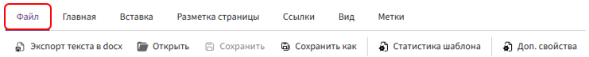
Используется для работы с самим шаблоном.
-
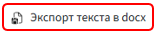
— выгружает не сам шаблон как объект, а именно его текстовое содержимое вместе с метками и функциями в формате .DOCX.Когда используется
-
Для переноса текста из старого шаблона в новый: экспортируете текст старого шаблона, затем через Файл → Открыть подгружаете его в новый шаблон.
-
Все метки, условия, циклы и функции сохраняются и продолжают работать.
Важный момент
Если в экспортированном тексте есть метки, которые ссылаются на поля анкеты, то после загрузки этого текста в новый шаблон необходимо добавить в анкету те же поля, что и в исходном шаблоне.
-
-
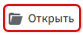
— загружает документ в формате .DOCX, который используется как текстовая основа для шаблона. После загрузки содержимое файла попадает в редактор, и к нему можно будет добавлять метки, функции и другие элементы автоматизации. -
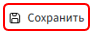
— фиксирует изменения, сделанные в шаблоне. -
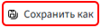
— сохраняет копию шаблона под новым именем. -
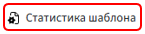
— показывает количество используемых полей, меток и функций. -
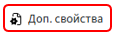
— для настройки масок имени и пути документа.
Основная цель масок — автоматически создавать уникальные имена файлов (маска имени) и их расположение (маска пути), упрощая организацию и поиск готовых документов.
Маска имени
Например, вы можете задать:
"Договор " & номерДоговора & " от " & датаДоговора
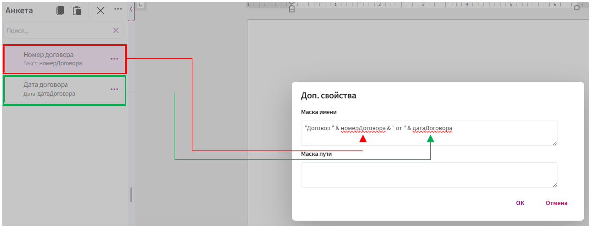
Результат:
Договор 15/22 от 01.01.2025 00:00:00
Разберёмся, из чего состоит маска:
-
"Договор "и" от "— это постоянный текст, он не меняется. Его нужно писать в двойных кавычках. -
номерДоговораидатаДоговора— это переменные, которые берутся из полей анкеты. При каждом новом документе значения могут быть другими. -
Символ
&— это «склейка», он соединяет кусочки текста и переменные в одно имя.⚠️ Если вы используете дату без формата, она может отображаться некорректно (например, с лишними нулями). Чтобы избежать этого, используйте функцию форматирования:
форматДаты(датаДоговора, ФорматДаты.ДатаКратко)Маска пути
Например:
"Договоры/ " & форматДаты(датаДоговора, ФорматДаты.ДатаКратко)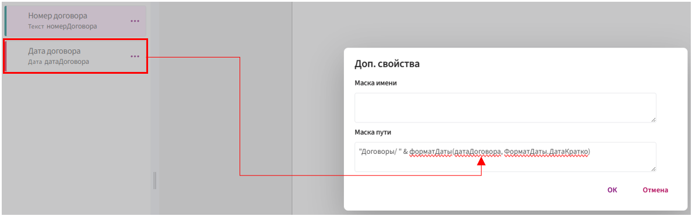
Результат:
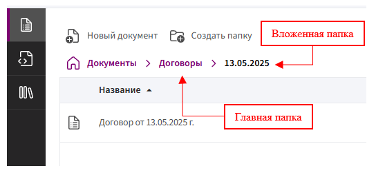
Разберём, из чего состоит маска:
-
"Договоры/"— постоянное название главной папки. Обязательно указывается в двойных кавычках и со слешем/. -
датаДоговора— переменная, которая подставляется из поля анкеты и формирует вложенную папку. -
&— символ объединения, «склеивает» постоянные и переменные части. -
форматДаты(...)— функция, которая задаёт нужный формат отображения даты (без неё может быть добавлено время или лишние нули).
⚠️ Важно: если использовать дату без формата, имя папки может быть некорректным. Всегда используйте форматДаты(...), чтобы указать нужный вид, например: форматДаты(датаДоговора, ФорматДаты.ДатаКратко)
Вкладка «Главная»
Основная вкладка для редактирования текста.
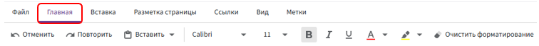
-
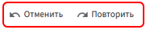
— Отменяет / Повторяет последние действия. -
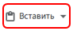
— стандартное меню работы с буфером обмена. -
Вставить — вставляет в шаблон текст или объект, который находится в буфере обмена (например, скопированный фрагмент текста или метку).
-
Копировать — копирует выделенный фрагмент текста или метку в буфер обмена, чтобы можно было вставить его в другом месте.
-
Вырезать — удаляет выделенный фрагмент из шаблона и одновременно помещает его в буфер обмена (с последующей возможностью вставить).
📌 По сути, это аналог привычных сочетаний клавиш:
-
Ctrl + V— вставить -
Ctrl + C— копировать -
Ctrl + X— вырезать
-
-
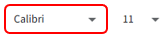
— список доступных шрифтов (например, Calibri, Times New Roman). -
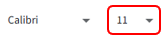
— размер шрифта (например, 11, 12, 14). -
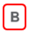
— выделяет текст полужирным (Ctrl+B). -
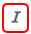
— наклонное начертание (Ctrl+I). -
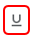
— подчёркивание текста (Ctrl+U). -
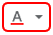
— выбор цвета символов. -
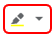
— выделение текста цветом (маркер). -
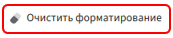
— сброс всех стилей (шрифт, цвет, размер и т. д.) к стандартному. -
— зачёркивание текста.
-
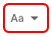
— делает текст надстрочным/подстрочным. -
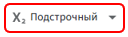
— изменение регистра текста.-
Как в предложениях — первый символ каждого предложения становится прописным, остальные строчными.
«это пример текста.» → «Это пример текста.» -
ВСЕ ПРОПИСНЫЕ — весь выделенный текст переводится в верхний регистр.
«Текст» → «ТЕКСТ» -
все строчные — весь текст становится строчными буквами.
«Текст» → «текст» -
Начинать С Прописных — каждое слово начинается с заглавной буквы.
«пример текста» → «Пример Текста» -
иЗМЕНИТЬ РЕГИСТР — инверсия: строчные буквы становятся прописными и наоборот.
«ПрИмЕр» → «пРиМеР»
-
-
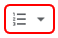
— маркированные, нумерованные и многоуровневые списки. -
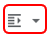
— увеличение/уменьшение абзацных отступов. -
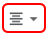
— выравнивание текста. -
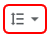
— межстрочный интервал (1.0, 1.5, 2.0 и т. д.). -
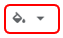
— изменение цвета фона выделенного абзаца. -
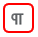
— отображение скрытых символов (например, переводы строк, пробелы). -
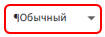
— применение стандартного стиля текста (можно выбрать и другие из списка). -
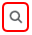
— поиск текста по документу. -
— замена текста по документу.
Вкладка «Вставка»
-
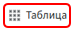
— вставляет таблицу в область редактирования. Можно задать количество строк и столбцов, а затем заполнять её данными. -
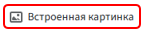
— добавляет изображение, которое будет отображаться внутри документа. -
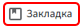
— создаёт закладку внутри текста. Она используется для быстрой навигации или для ссылок внутри документа. -
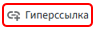
— позволяет вставить ссылку (например, на сайт, место в документе (совместно с «Закладкой»), адрес электронной почты). -
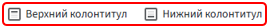
— вставляет текст или элементы, которые будут отображаться в верхней/нижней части каждой страницы документа. -
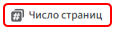
— автоматически вставляет нумерацию страниц. -
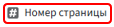
— подставляет общее количество страниц в документе. -
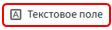
— вставляет отдельный блок текста, который можно перемещать и размещать в любом месте страницы.
Вкладка «Разметка страницы»
-
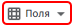
— настройка отступов (слева, справа, сверху и снизу). -
Можно выбрать стандартные варианты (узкие, широкие и т. д.) или задать свои размеры.
-
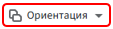
– выбор ориентации страницы: -
Книжная (вертикальная)
-
Альбомная (горизонтальная)
-
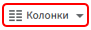
– задаёт формат бумаги. -
По умолчанию используется A4, но доступны и другие варианты (A3, Letter и т. д.).
-
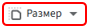
– разбивает текст на несколько колонок (как в газетах или журналах). -
Можно сделать 2 или 3 колонки, задать их ширину и интервалы.
-
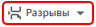
– вставка разрывов страниц, разделов или колонок. -
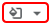
– заливка всех страниц.
Вкладка «Ссылки»
-
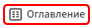
– вставка автоматического оглавления. -
Формируется на основе стилей заголовков (Заголовок 1, Заголовок 2 и т. д.).
-
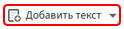
– позволяет включить выделенный фрагмент в оглавление. -
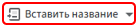
– добавление подписей к объектам (рисункам, таблицам, диаграммам). -
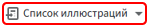
– создаёт отдельный список всех подписанных объектов (например, список рисунков или таблиц). -
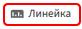
– обновляет структуру оглавления.
Вкладка «Вид»
- – включает или отключает горизонтальную и вертикальную линейки в области редактирования.
Вкладка «Метки»
-
– вставка значения поля из анкеты. Подробнее
-
– вставка содержимого другого шаблона по указанному пути. Подробнее
-
– логическая конструкция «если/иначе», которая позволяет показывать или скрывать части текста в зависимости от условий. Подробнее
-
– вставка вариантов текста в зависимости от выбранного значения в списке. Подробнее
-
– циклический вывод данных из списка. Подробнее
-
– специальный цикл для отображения данных в табличной форме. Строки таблицы создаются динамически в зависимости от количества элементов в списке. Подробнее
-
– позволяет из одного шаблона сделать сразу несколько файлов. Подробнее